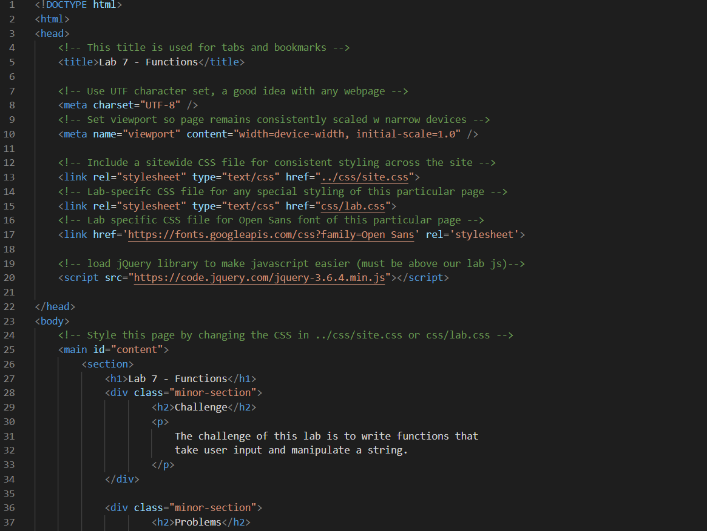
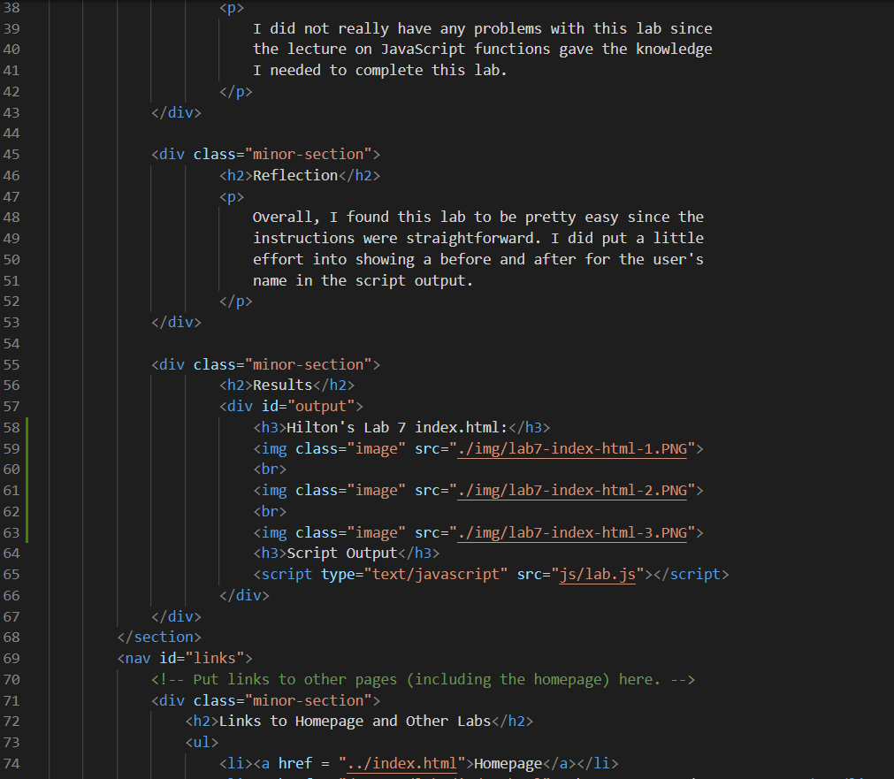
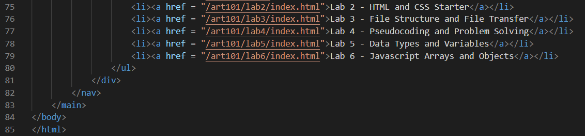

Lab 7 - Functions
Challenge
The challenge of this lab is to write functions that take user input and manipulate a string.
Problems
I did not really have any problems with this lab since the lecture on JavaScript functions gave the knowledge I needed to complete this lab.
Reflection
Overall, I found this lab to be pretty easy since the instructions were straightforward. I did put a little effort into showing a before and after for the user's name in the script output.
Results
Hilton's Lab 7 index.html:

